|
India is a land of festivals, where people from different religions coexist harmoniously. The wide variety of festivals celebrated in India is a true manifestation of its rich culture and traditions. There are many Indian festivals and celebrations, the most exciting of which are mentioned below. While the celebrations happen all over the year, October till January is the time when the country can be seen at its vibrant best.
List of Indian Festivals: The widely celebrated religious festivals in the country
1. DIWALI

Diwali, one of the most prominent Hindu festivals of India, is celebrated with a lot of pomp and show. During this festival of lights, houses are decorated with clay lamps, candles, and Ashok leaves. People wear new clothes, participate in family puja, burst crackers, and share sweets with friends, families, and neighbors.
2. HOLI

Also known as the festival of colors, holi is one of the famous festivals of India, celebrated with a lot of fervor across the country. On the eve of Holi, people make huge Holika bonfires and sing and dance around it. On the day of Holi, people gather in open areas and apply dry and wet colors of multiple hues to each other, with some carrying water guns and colored water filled balloons.
Significance: It signifies the victory of good (Prince Prahlad) over evil (Holika) and the arrival of spring.
Key attractions: Holika bonfire, playing with colors, and bhang thandai
When: Full moon (Purnima) of the Phalgun month of the Hindu lunisolar calendar, which corresponds to the month of March of the Gregorian calendar
Where: Almost all over the country; most vibrant celebrations can be seen in North Indian states
Holi 2017: 12th March
3. DUSSHERA
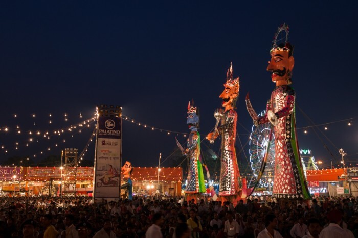
Dussehra, also referred to as Vijayadashami, is also among the most famous festivals of India. It is celebrated in different forms countrywide. Ramlila(enactment of scenes from Ramayana) is held everywhere for 10 days. It�s culminated with �Ravan Dahan� � the burning of huge effigies of Ravana, Meghnath and kumbhakaran which is a real spectacle to see.
Significance: It celebrates the death of the demon king Ravana at the hands of Lord Rama.
Key attractions: Hustle bustle of the decorated markets, Ram-leela acts, and the big event of the burning of effigies of Ravana, Meghnad, and Kumbhakaran
When: 10th day of the month of Ashwin according to the Hindu lunisolar calendar, which corresponds to September or October of the Gregorian calendar
Where: Pan India
Dussehra 2017: 30th September
4. NAVRATRI

Navratri festival is celebrated by all people throughout India in different ways. In Gujarat, it is a nine day celebration of rejuvenating Garba nights and highly energetic Dandiya Raas dances. People are dressed in beautiful, colorful traditional clothes and the environment is very youthful and invigorating.
Significance: It represents the celebration of the Goddess Amba (Power) in nine different forms.
Key attractions: The 9 days of dance festivities in Gujarat, the exquisite Chaniya Choli�s (traditional skirt & blouse), and the Gujarati cuisine � Sabudana Khichdi, Mandavi Paak, Singoda ki Kheer, and Potato Wafers
When: The first nine days of the month of Ashwin according to the Hindu lunisolar calendar, which correspond to September or October of the Gregorian calendar
Where: Almost all over the country; most vibrant in Gujarat, Maharashtra and the metros
Navratri 2017: Begins on 21st September
5. DURGAA PUJA
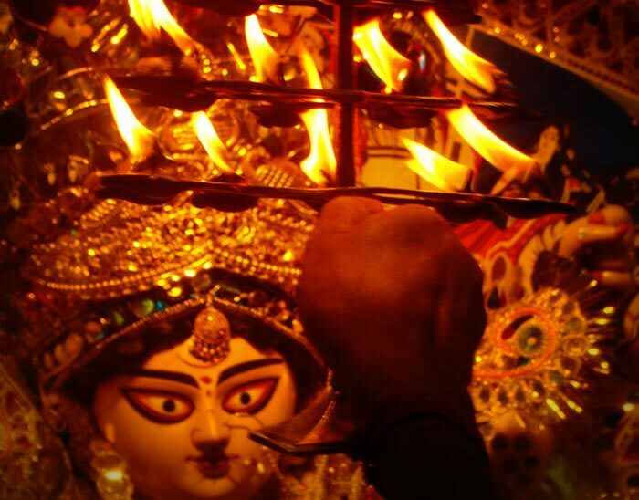
One of the important Hindu festivals of India, Durga Puja is celebrated with grandeur by Bengalis, throughout the country. The 10 days of fast, feast, and worship of Goddess Durga are accompanied by cultural songs, dances, and dramas. Huge and beautiful Durga idols are made and placed in specially made artistic Pandals(canopies). People dress in traditional wear and go around the pandal � hopping, praying, and feasting.
Significance: It commemorates Lord Rama�s invocation of Goddess Durga before going to war with the demon king Ravana.
Key attractions: Plush pandals, incredibly beautiful ten armed Durga idols, and the puja
When: 10th day of Ashwina shukla paksha according to the Hindu lunisolar calendar, which corresponds to September or October of the Gregorian calendar
Where: Kolkata and the metros are the best places to be in India during Durga Puja celebrations
Durga Puja 2017 Begins on 26th September
6. KRISHNA JANMASTMI
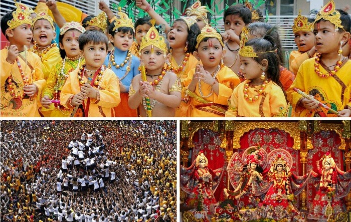
Janmashtami is again a beautiful one among the most important religious festivals of India. Janmashtami celebrations in Mathura and Vrindavan are very popular. People fast throughout the day and break it with a special meal after dusk. Visiting temples, praying, dancing, and singing bhajans (hymns) at midnight is a part of the celebrations of the birth of Lord Krishna. Often, small children dress up like Lord Krishna on this day. Images and picturization of Krishna�s life story are depicted in the �jhaankis� in temples.
Significance: It is the annual celebration of the birthday of Lord Krishna.
Key attractions: The Janmashtami puja and festivities in the temples and the jhaankis of Lord Krishna
When: The 8th day (Ashtami) of the Krishna Paksha (dark fortnight) of the month of Bhadrapad according to the Hindu lunisolar calendar, which corresponds to August or September of the Gregorian calendar
Where: Celebrated by the Hindu community all over, but the festivities at Mathura and Vrindavan are very popular
Janmashtmi 2017: 15th August
7. GANESH CHATURTHI
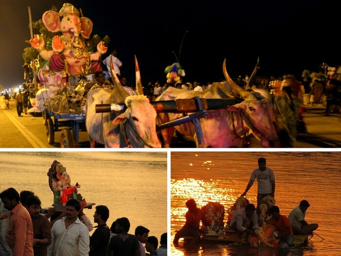
Ganesh Chaturthi, another one of important Hindu religious festivals of India, is a 10-day affair of colorful festivities. Huge handcrafted Ganesh idols are installed in homes or outdoors, in public pandals. Pujas are performed in the morning and the evening. The last day is the day of Visarjan � immersion of an idol in a water body. Cultural activities of singing, dancing, and theater, and free medical and blood donation camps are held.
Significance: It�s the birthday of Lord Ganesha, the elephant-headed God.
Key attractions: The beautifully crafted life size idols of Ganesha, and the immersion ceremony
When: The 4th day of the first fortnight (Shukla Chaturthi) in the month of Bhadrapada of the Hindu lunisolar calendar, which corresponds to August or September of the Gregorian calendar
Where: Celebrated in the states of Maharashtra and Andhra Pradesh with fervor and gaiety
Ganesh Chaturthi: 5th September
8. GURU PURB
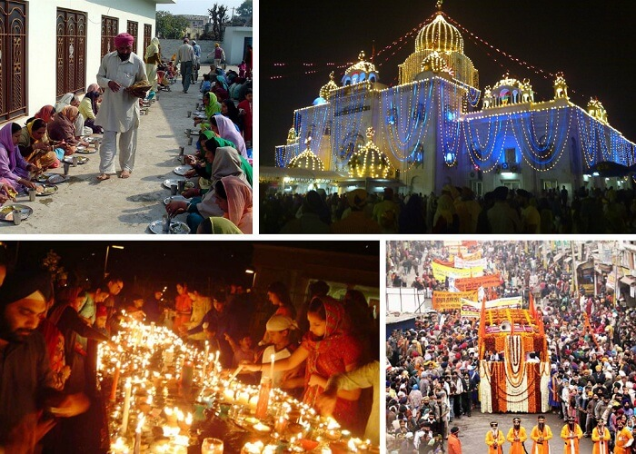
On the most important Sikh festival of India, special assemblies on the lives and teachings of the gurus, and langars (community meals) are organized in the gurudwaras. Karah Prasad is distributed among all, and hymn chanting processions are held in the city. People light up their homes with lamps and candles and burst crackers to celebrate Gurpurab.
Significance: It is the celebration of the anniversaries of the ten Sikh Gurus.
Key attractions: The soulful Bhajan-Kirtan (hymns), Gurbani in the Gurdwaras, the Langar and the Karah Prasad
When: The full moon day in the month of Kartik of the Hindu lunisolar calendar, which corresponds
to November of the Gregorian calendar
Where: Celebrated by the Sikh community all over the world, especially in Punjab
Gurupurab 2017: 5th January
9. RAKSHA BANDHAN
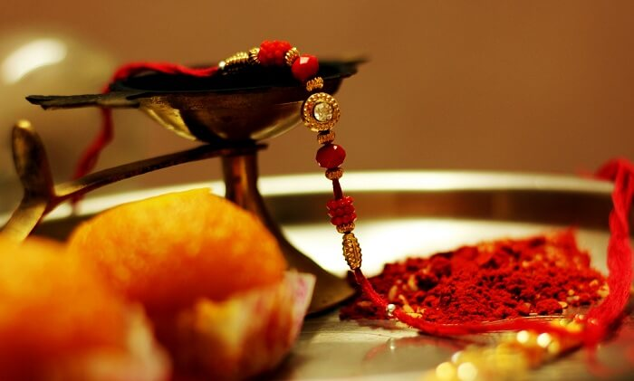
One of the famous festivals of India, Rakhi is celebrated among Hindu. Signifying the brother-sister bonding, during Rakhi, the sister performs Aarti (prayer), applies tilak, and ties rakhi (a sacred thread) on the brother�s wrist wishing his well being. The brother, in return, vows to protect the sister. Another festival which has strong similarity to Rakhi is Bhaidooj which comes just after Diwali.
Significance: It symbolizes the strong bonding of a brother and sister.
Key attractions: The ritual of Rakhi and the brightly decked up markets showcasing a colourful variety of rakhis and sweets
When: The full moon day of Shravana month of the Hindu lunisolar calendar, which corresponds to August of the Gregorian calendar
Where: Particularly in North, Central and West India
Rakshabandhan 2017: 7th August
10. EID- UL- FITRA

Eid is one of the major festivals of India for the Muslim community. People dress up in fineries, attend a special community prayer in the morning, visit friends, and relatives and exchange sweets. Children are given idi(money or gift) by elders.
Significance: It celebrates the conclusion of the holy month of fasting called Ramadan.
Key attractions: The beautifully decked up markets and mosques, the morning Eid namaz at the mosques, and the sweet dishes.
When: On the 1st day of the month of Shawwal of the lunar Hijri calendar, which corresponds to July of the Gregorian calendar
Where: Celebrated by Muslims all over the country
Eid Ul Fitr 2017: 26th June
11. BIHU
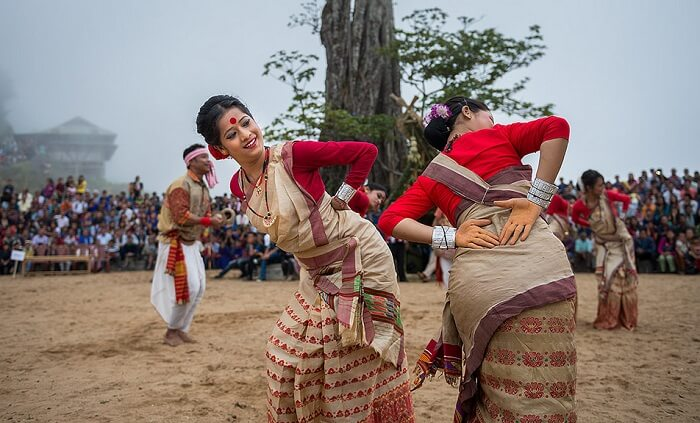
Popular among the festivals of India celebrated in the North East, Bihu is the harvest festival of Assam. During the month-long celebrations, young men and women wear their traditional clothes and perform the Bihu dance in the village fields and courtyards. A community feast is held with a lot of fanfare.
Significance: It�s the traditional new year celebration of Assamese.
Key attractions: The Bihu dance and the local cuisine � coconut laddoo, til pitha, ghila pitha, and fish pitika
When: 14th or 15th April
Where: Celebrated by the Assamese diaspora around the world, especially in Assam
Bihu 2017: Begins on 14th April
12.HEMIS
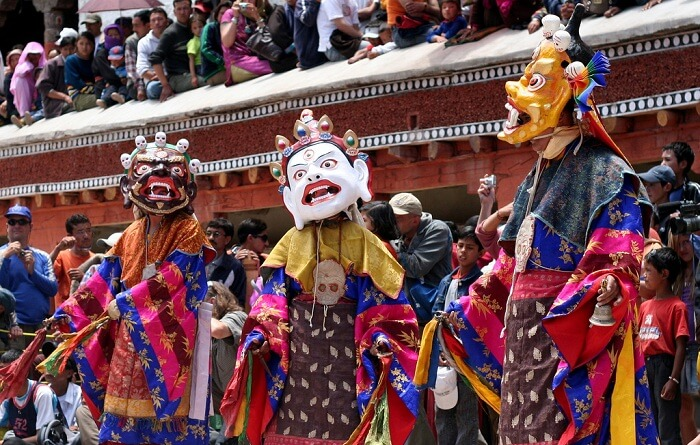
Hemis, the two-day religious festival from Ladakh, is one of the important festivals of India. It attracts a lot of locals and foreign tourists each year. The festivities include the Cham dance done by the priests to the tune of the traditional music of cymbals, drums, trumpets played by the monks. The dancing priests dress up in elaborate brocade outfits and masks.
Significance: It�s the celebration of the birth anniversary of spiritual leader Padmasambhava, founder of Tibet Tantric Buddhism.
Key attractions: The scenic Hemis monastery and the Cham dance
When: 10th day (called Tse-Chu in the local language) of the Tibetan lunar month, which corresponds to June or July of the Gregorian calendar
Where: Ladakh, Jammu & Kashmir
Hemis 2017: Begins on 23rd June
13. ONAM
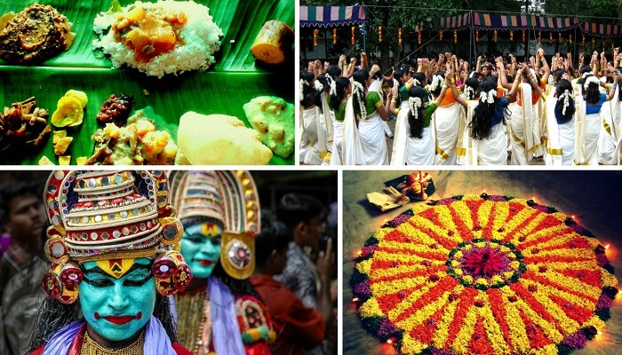
Onam is among the important festivals of India, wherein people wear traditional wear, adorn houses with Pookalam (floral designs), and prepare Onasadya(elaborate meal of 11/13 dishes). Events such as Vallamkali(snake boat race), Kaikottikali(clap dance), Kathakali dance, and Pulikali procession(artists dressed and painted like tigers and hunters) are held.
Significance: It celebrates the homecoming of the legendary king Mahabali.
Key attractions: The spectacular Snake Boat Race, the enigmatic Kaikottikali dance, and the Elephant procession
When: In the month of Chingam of the Malayalam calendar, which corresponds to August or September of the Gregorian calendar
Where: Celebrated by people of all communities in the state of Kerala.
Onam 2017: Begins on 25th August
14. PONGAL
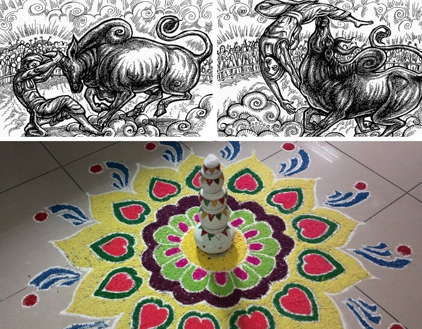
The four-day long harvest festival of South India is one of the most famous festivals of India. People prepare Pongal dish and wear their traditional attire. Celebrities include bonfires, dance, cattle races, sweets, and savories. The houses look resplendent with Kolam designs (traditional floral designs made with rice, colored powders, and flower petals)
Significance: It�s a festival of thanksgiving to nature representing the first harvest of the year.
Key attractions: The variety of Kolam designs and cattle races
When: 14th or 15th January
Where: Celebrated by Tamils all over India, primarily in Tamil Nadu
Pongal 2017: Begins on 13th January
15. Christmas
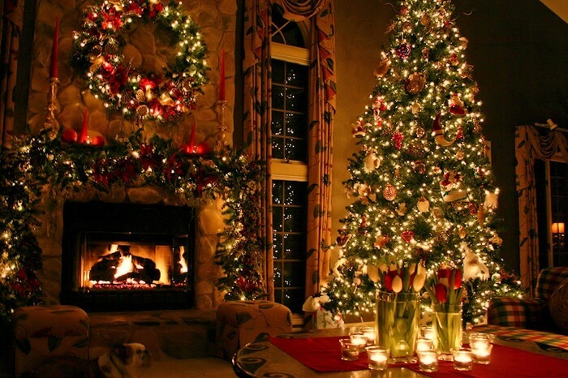
One of the most famous and awaited festival in the world, Christmas happens to be of sheer significance for elders and children alike. Everyone regardless of their religion wait for this day, children specifically for the surprise gifts from Santa. All the churches are lit up and decorated to celebrate the birth of Lord Jesus.
Significance: Birthday of Lord Jesus
Key attractions: Christmas tree decoration, prayers, birth of Lord Jesus and Santa Claus
When: 25th December
Where: The festival is celebrated across India. The best places to celebrate Christmas in India are Goa, Pondicherry, and Kerala.
Christmas 2017: 25th December
|